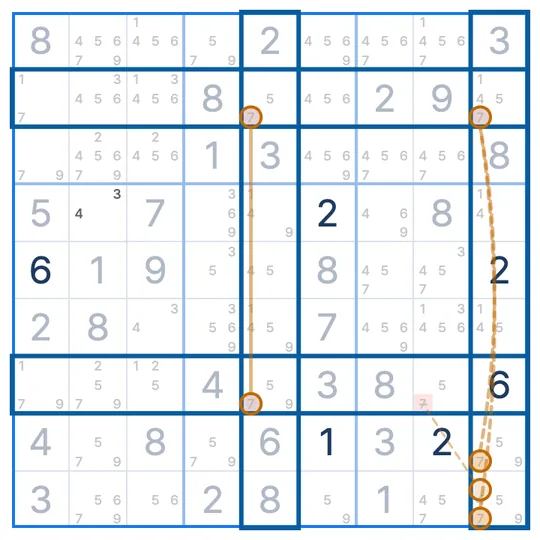

SUDOKU TECHNIQUE · 피쉬 계열
사시미 X-윙
Sashimi X-Wing
사시미 X-윙(Sashimi X-Wing)은 X-윙 모양의 한 모서리가 비고 그 옆 박스에 후보(핀)가 있을 때, 핀과 같은 박스이면서 빈 모서리의 열에 있는 칸에서 그 숫자를 지우는 스도쿠 기법이에요.
- 보는 숫자
- 한 종류
- 필요한 것
- 모서리 하나가 빈 X-윙 + 핀
- 지우는 곳
- 핀의 박스 안, 빈 모서리의 열
사시미 X-윙 모양
숫자 4만 본 그림이에요. 2행은 4가 3열과 7열 두 칸뿐이에요. 6행은 3열에 4가 있지만 7열 자리(6행 7열)는 비어 있고, 대신 같은 6번 박스의 6행 8열과 6행 9열에 4가 있어요. 이 두 칸이 핀이에요.
왜 지울 수 있나요?
핀 두 칸이 4인지 아닌지로 나눠 볼게요.
두 경우에 모두 4가 아닌 칸은 7열이면서 6번 박스 안에 있는 칸이에요. 그래서 4행 7열의 4를 지워요. 5행 7열도 조건이 같지만 이 그림에서는 4 후보가 없어요.
사시미 X-윙 찾는 순서
- 두 칸뿐인 행과, 모서리 하나만 빠진 비슷한 행을 찾아요.
- 빈 모서리와 같은 박스에 그 행의 다른 후보(핀)가 있는지 봐요.
- 그 박스 안에서 빈 모서리의 열에 있는 칸(두 행은 빼고)에서 그 숫자를 지워요.
자주 헷갈리는 점
핀드 X-윙과 뭐가 달라요?
핀드 X-윙은 네 모서리가 모두 있고 핀이 덧붙은 모양이에요. 사시미 X-윙은 모서리 하나가 비어 있어요. 지우는 원리는 같아요.
이름이 왜 사시미예요?
모서리를 회 뜨듯 잘라 낸 생선(피쉬) 모양이라는 뜻의 별명이에요.
핀이 다른 박스에 있으면요?
그때는 지울 수 없어요. 핀은 빈 모서리와 같은 박스에 있어야 해요.
비슷한 기법
스도쿠 리그 앱에서
막히면 힌트가 사시미 X-윙을 보여줘요
풀다가 막혀 힌트를 누르면, 빈 모서리와 핀, 지울 칸을 보드 위에 그려서 보여줘요. 기법 연습에서는 실제 문제 위에서 사시미 X-윙 수업을 들을 수 있어요. 첫 판에서 모양과 이유를 같이 보고, 다음 판에서는 직접 찾아봐요.

EVENT · SUDOKU LEAGUE PREMIUM
1개월 무료
무제한 힌트 · 리플레이 · 테마 팩 6종 · 기법 연습
쿠폰 받으러 가기 ▸수량